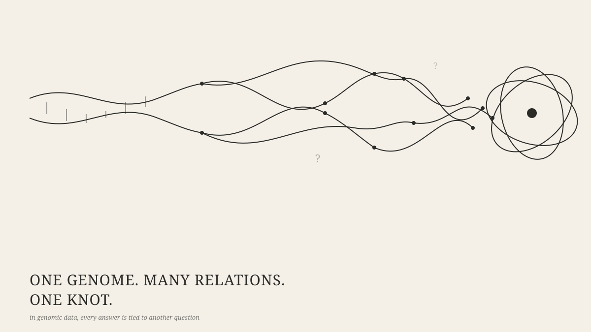

Who Owns a Discovery About You?
I like the idea of a personal genome vault. Instead of handing my DNA data to a company and trusting them, I would keep it in storage I control and decide who gets access, for what purpose, and for how long. Self-custody is a familiar idea with money already, and a genome is far more personal than a bank balance. I still think the idea is right. But one thought experiment keeps bothering me, as it points at a gap that no vault can close. More importantly, I've been working for the past couple of months to solve the technical aspects of mainstreaming the genetic data. Suppose I give a research team access to my genome for a study of an inherited heart condition. They find a variant responsible for raising the risk of the disease. That matters to me, obviously. It also matters to my siblings, because if the variant runs in the family, each of them may carry it too. My siblings never joined the study and never signed a consent form. Nobody broke into an account, and my data was used exactly as I allowed. Yet something about my siblings has become easier to know because of a choice I made.
This is the part of genetic privacy that is easy to miss: a sample can belong to one person while the consequences of studying it reach other people. My argument here is narrow. Ownership of a genome file is really a bundle of custody rights. Those rights are necessary, and I want people to have far more of them, but they cannot settle who may learn what, who must be told, and who answers when something goes wrong. A platform that gives people control also needs a second layer of governance, one that deals with findings and with people who are not at the table.

A genome doesn’t stop at the person who supplied it
Privacy rules mostly draw lines around individuals. My record is about me, yours is about you, and consent is how each of us decides what happens to our own information. Genomes blur those lines. Relatives share ancestry and, often, specific variants, so a result in one person changes what can reasonably be suspected about another.
Clayton, Evans, Hazel and Rothstein, in their review of US genetic privacy law, describe the genome as private and public at the same time: unique to the individual as a whole, yet built from variants widely shared with relatives and with the wider population. They add that the meaning of any one person’s variants only becomes clear by studying many people. [1] That is a real paradox. Researchers need many participants to interpret a variant, and once it is interpreted it can say something about relatives who were never in the study.
It helps to be precise about what a finding does. If I carry a variant for a dominant heart condition and inherited it from a parent, each full sibling has roughly a 50% chance of carrying it too. If it arose newly in me, their risk is low. Either way, carrying a variant is not the same as developing the disease, because many variants are incomplete due to recessive/dominant stuff . So a finding shifts the estimated risk for my relatives. It does not reveal their genotype.
The word “sharing” also hides four separate steps:
- The data already contain information relevant to relatives. That is a property of genomes, not a decision anyone made.
- Researchers analyse the data and report a finding.
- The finding is returned to the participant.
- The finding reaches a relative, through the participant, a clinician or the researchers.
My siblings’ knowledge only changes at step four. Their exposure starts earlier, because once a finding exists, everyone who holds it can reason about them. US law has partly absorbed this: GINA defines genetic information to include the genetic tests of an individual’s family members and the manifestation of disease in them. [1] But GINA’s protections cover health insurance and employment. As of Clayton and colleagues’ 2019 review, no state law stopped insurers from using genetic information in a person’s health records for underwriting, and life, disability and long-term-care insurance sit outside GINA. [1]
What consent can and can’t promise
Consent is a promise about a purpose and a scope. I agree that researchers may study my genome for heart disease, under stated safeguards. What I cannot consent to is the study’s conclusions, because nobody knows them in advance, or the later studies that will build on this one, or anything on behalf of my siblings. Broad consent and dynamic consent, where participants are asked again as projects change, stretch the model, and they are worth building. They still bind only the person who signs. So “we have consent” is a weak answer to the sibling problem. Consent legitimises the participant’s contribution. It does not settle what is owed to other people affected by what that contribution turns up.
Go back to the heart condition. Should I be allowed to keep my result private? Do my siblings have a legitimate interest in learning that a serious risk might run in the family? Telling them could allow early screening and could save a life. It could also reveal things about me, strain relationships, or burden someone who would rather not know. If the evidence is weak, or nothing useful can be done, the case for telling them gets much weaker. Ethics bodies have not overlooked this. Phillips and colleagues reviewed 35 normative documents on sharing genetic information with relatives. Most accepted disclosure without the patient’s consent in limited circumstances, but the review found that the conditions for doing so were often poorly defined. [2]
Some guidance is more specific. The American Society of Human Genetics’ 1998 statement says disclosure should be permissible where attempts to encourage the patient to tell their relatives have failed, the harm is highly likely, serious and foreseeable, the at-risk relatives are identifiable, and the condition is preventable or treatable, or early monitoring reduces the risk. [3] The law is often stricter. In the US, Clayton and colleagues conclude that, outside narrow exceptions, clinicians are neither required nor permitted to inform at-risk relatives without the patient’s consent. [1] And all of this was written with clinical care in mind. A research finding arrives through a study, not a treatment relationship, and returning a participant’s results to relatives has been analysed as its own problem. [4] I don’t think relatives always have a right to know, and I don’t think a participant’s confidentiality ends the discussion. The answer depends on how reliable the result is, how serious the risk is, whether anything can be done about it, and what the local law allows. Someone has to be responsible for weighing those things case by case. A signed consent form cannot do that.
You can be affected without ever giving a sample
In 2013, Gymrek and colleagues showed that surnames could be inferred for some male research participants by matching Y-chromosome markers against public genealogy resources, and that combining the surname with other details could narrow the field to a single person. [5] The lesson was not that every genome can be identified. It was that removing names does not make genomic data anonymous. That study is about the participants themselves, though. The relative problem works through kinship. In 2018, investigators identified the Golden State Killer by matching crime-scene DNA to the data of distant relatives in a public genealogy database and then tracing the family tree. [1, 6] Erlich and colleagues later estimated that a genealogy database covering only a small fraction of a population is enough to find a third-cousin-or-closer match for most people in it. [7] So someone who has never taken a DNA test can become identifiable because enough of their relatives did.
There is a counterweight, and it corrects my own worry a little. Clayton and colleagues note that research settings have not seen a flood of re-identification attempts, partly because institutions have strong incentives to protect data and usually require investigators to promise not to try. [1] The exposure is greatest where identified data from relatives sits in open consumer databases that nobody governs. The risk is real but uneven. Not every inference is harmful. Matching can reunite relatives, explain a disease risk or sharpen a diagnosis. That is why this is a bigger question than data security. It is not only who can open the file, but what that access makes possible afterwards.
What ownership does and doesn’t give you
“Ownership” bundles several different things, and the bundle is easy to mistake for a single right:
- Custody: where the file sits and who can open it.
- Permission: choosing which projects get access, and withdrawing it later.
- Control over uses: for example, whether my data may contribute to a commercial drug.
- Control over findings: what gets concluded, and who is told.
- A share of the benefits.
A vault delivers the first two very well. It delivers less of the third and almost nothing of the fourth, because revoking access to a file does not undo an analysis that is finished, retract a result that is published, or erase what a researcher has learned.
The law points the same way. Courts have been reluctant to treat people as owners of what is made from their biological material. In Moore v. Regents of the University of California, a patient whose cells became a valuable cell line could not sue for conversion, although the court allowed a claim based on his doctor’s failure to disclose a financial interest. In Greenberg v. Miami Children’s Hospital Research Institute, families who had donated tissue for Canavan disease research lost their property-based claims against the institution that patented the resulting gene discovery. [8, 9] A handful of US states do recognise a property interest in genetic information. Alaska’s statute, for example, pairs it with a ban on unauthorised disclosure of DNA information. [1] That protects against misuse of the DNA itself. It says nothing about who holds a discovery made from it.
Europe’s GDPR treats genetic data as a special category of personal data and gives people rights such as access and erasure. [10] Those are real protections. But the framework is built around an identified or identifiable person, whether an inference about my sibling counts as my sibling’s personal data is arguably unsettled, and nothing in it says who holds a finding. Its right to erasure also sits uneasily with immutable ledgers. So “owns” is probably the wrong verb for a discovery. I’ll come back to that at the end.
Decentralization settles custody, not ethics
There are good reasons to move control away from a single company. A private vault gives people a say over access. Clear permissions make the rules visible, and a tamper-evident log records who was allowed to do what. Shabani discusses this promise of distributed stewardship and participatory access control for genomic data sharing. [11] But those tools manage custody and permissions. They cannot decide whether a finding should reach a relative, whether the evidence is strong enough to act on, or who is liable when a permitted analysis causes harm. A permission can work exactly as designed and still authorise something that deserves scrutiny. A permanent record can show that a decision was made. It cannot show that the decision was fair. Writing sensitive information to a public blockchain may make it impossible to remove later, and even metadata can reveal more than intended if access patterns and identities are linked carelessly. Keeping raw genomes off-chain is necessary, but it is the easy part of the design problem.
The WHO’s 2024 guidance on human genome data points in the same direction. Its eight principles include stewardship, transparency and accountability, and they put the rights of individuals and communities side by side. [12] I still believe people should have far more control over their genetic data than they do now. I just wouldn’t trust a platform because it calls itself decentralized. I would want to know what it does about the problems its technology can’t solve: familial risk, uncertain results, secondary use, requests for disclosure, and responsibility when something goes wrong.
A second idea: relational genomic stewardship
I’ll call that second idea relational genomic stewardship. The label is mine, not a legal doctrine, and its parts are not new. Clayton and colleagues argue that it may be time to move from trying to control access to genetic information toward asking how the data can be used and under what conditions. [1] WHO already names stewardship and accountability as principles. [12] What I am adding is the application: a platform built around personal control should also commit to the following.
- Unbundle the decisions. Access to raw data, producing a derived result, returning it to the participant, sharing it onward and reusing it for a new purpose are separate permissions, not one yes or no at enrollment.
- Say what consent covers and what it doesn’t. Tell participants plainly that findings may implicate relatives, and ask up front how they want that handled: offer it to my relatives through a clinician, don’t share it, or let a review body decide using the conditions below. Don’t pretend a form can predict every future use.
- Set an evidence threshold before anyone discusses relatives. A statistical association is not a diagnosis, and a risk to a relative is not a confirmed variant. Only findings that clear a clinical bar, such as a variant classified as pathogenic or likely pathogenic under ACMG/AMP standards, should reach the question at all. [13]
- Use a defined process for disclosure to relatives, instead of leaving each hard case to one researcher or a vague clause. Default to the participant’s confidentiality. Consider overriding it only if conditions like the ASHG’s are all met, and never where local law forbids it. [1, 3] When disclosure does happen, make it an offer routed through clinicians or genetic counselling, so relatives can decline.
- Keep institutions answerable. Participants can’t be expected to foresee every downstream use or to police the world. The organisations that hold and analyse the data should be accountable for their own decisions, with somewhere to take disputes. If genomic research creates value, write down who benefits and who carries the risk.
This won’t make every conflict easy. A relative may sometimes want information the participant won’t release. Evidence will often be too thin to act on. Governance can’t remove those tensions, but it can make the reasoning visible and give people somewhere to turn.
The question a key can’t answer
Return to my own case. I made a legitimate choice to share my data. The researchers stayed inside the study’s agreed scope. Their finding could help my family, or feed a discovery that helps thousands of people. And still the result reaches past the person who consented. It would be absurd to conclude that I should never have taken part in research. It would be just as easy, and just as wrong, to say that because I consented, every consequence is settled. My decision matters. It is not the only interest in the story.
So who owns a discovery about you? Probably nobody, in the ordinary sense of owner. Participants usually can’t claim property in what is made from their material. Researchers and institutions can hold intellectual property in what they build, but that is not the same as owning the truth about someone’s body or family. Relatives have interests, not ownership. What we can decide is who has a say, who must answer, and who gets told. We can give people control over who accesses their genome. We cannot promise that what researchers learn from it will concern only them, and a platform that implies otherwise is overselling. The real test of a genetic-data platform is not whether a person holds the key to their genome. It is whether the platform has thought carefully about what happens when that key opens a door onto someone else’s life.
References
- 1. Clayton EW, Evans BJ, Hazel JW, Rothstein MA. The law of genetic privacy: applications, implications, and limitations. Journal of Law and the Biosciences. 2019. doi:10.1093/jlb/lsz007
- 2. Phillips A, Borry P, Van Hoyweghen I, Vears DF. Disclosure of genetic information to family members: a systematic review of normative documents. Genetics in Medicine. 2021.
- 3. American Society of Human Genetics Social Issues Subcommittee on Familial Disclosure. Professional disclosure of familial genetic information. American Journal of Human Genetics. 1998;62:474.
- 4. Wolf SM, et al. Returning a research participant’s genomic results to relatives: analysis and recommendations. Journal of Law, Medicine & Ethics. 2015;43:440.
- 5. Gymrek M, McGuire AL, Golan D, Halperin E, Erlich Y. Identifying personal genomes by surname inference. Science. 2013;339:321.
- 6. Ram N, et al. Genealogy databases and the future of criminal investigation. Science. 2018;360:1078.
- 7. Erlich Y, Shor T, Pe’er I, Carmi S. Identity inference of genomic data using long-range familial searches. Science. 2018;362:690.
- 8. Moore v. Regents of the University of California, 51 Cal. 3d 120 (1990).
- 9. Greenberg v. Miami Children’s Hospital Research Institute, 264 F. Supp. 2d 1064 (S.D. Fla. 2003).
- 10. Regulation (EU) 2016/679 (GDPR), Article 9 and Recital 34.
- 11. Shabani M. Blockchain-based platforms for genomic data sharing: a de-centralized approach in response to the governance problems? Journal of the American Medical Informatics Association. 2019.
- 12. World Health Organization. Guidance for human genome data collection, access, use and sharing. Geneva: WHO; 2024.
- 13. Richards S, et al. Standards and guidelines for the interpretation of sequence variants. Genetics in Medicine. 2015;17:405.